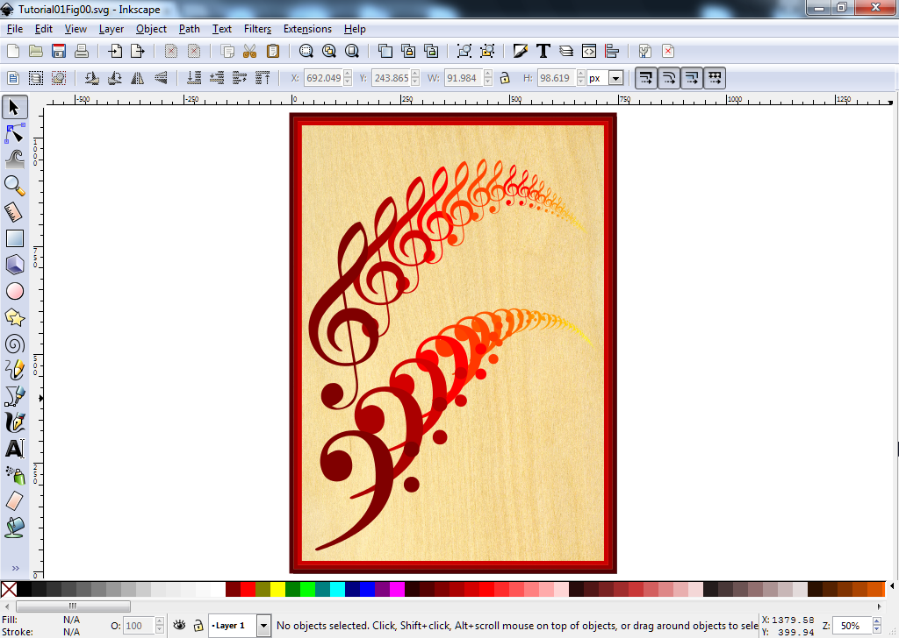
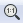
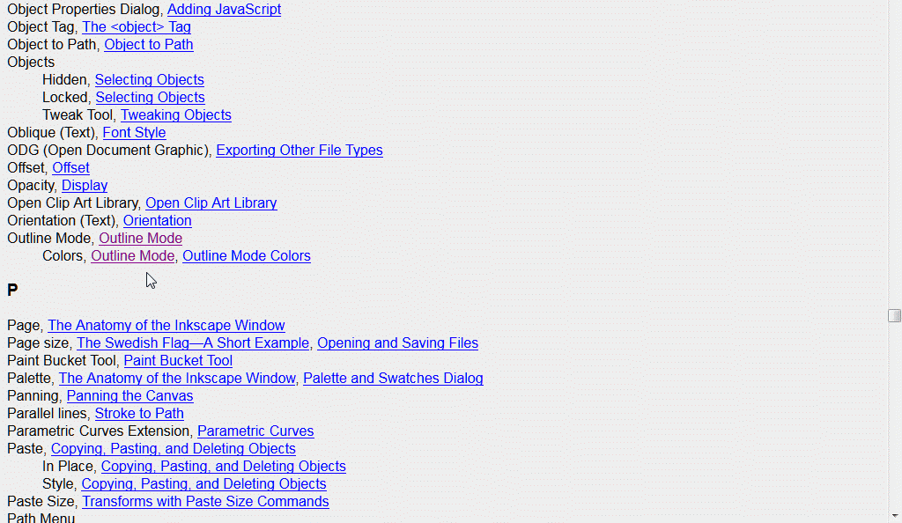

Tutorial 1 – Getting Acquainted with the Work Area
Learning the parts of the work area and how to navigate
among them will help you make effective use of Inkscape. The work
area includes the canvas, page, scratch area, and toolbars.
In this tutorial on the work area, you will learn:
how to open an Inkscape file.
how to select tools from the toolbar.
how to magnify and reduce the size of an image.
how to work with dialogs.
how to use the Inkscape manual.
You will be working on an art file in this tutorial.
Double-click the Inkscape icon to launch Inkscape. The work area appears after several
seconds of uploading Inkscape into your computer's CPU. If it takes more than a minute to upload,
be patient. Inkscape will upload.
Click on File > Open and open the Tutorial01Image01.svg file in the Tutorial01 folder.
The image is larger than will fit on the screen - its bottom is hidden behind the horizontal scroll
bar. To resize the image so that it fits just right in the screen, click on the Zoom in or out (F3)
icon in the
toolbox on the left of the screen, and then click on the Zoom to fit page
in window (5) icon in the toolbar above the work area .
The image now fits perfectly in the window. We'll work more with the Zoom function later in this tutorial.
Choose File > Save As..., name the file Music, and select the Tutorial01 folder
in the Save In menu. In the Save as Type bar, leave the type of file format set to the
Inkscape SVG (*.svg) default format, and click Save. Inkscape will automatically append the
.svg (scalable vector graphics) extension to the filename.
What's in the Work Area
The Canvas: The canvas is all the space inside the Inkscape window. It includes
the space that houses the artwork you're working on and the space outside the page boundary.
The Page: The page, which is part of the canvas, is bounded by solid lines and represents
the region containing printable artwork. By default, the artboard is the same size as a 210 mm
× 297 mm sheet of A4 paper, but it can be enlarged (for example, up to 11 in. × 17 in. and
larger) or reduced to card-size.
The Scratch Area: The scratch area is all the area outside of the page boundaries. You can use
this space for storing pieces of imagery that you can use later in your artwork, trying out
experiments, doodling, and more.
Viewing Your Artwork
When you first open a file, Inkscape displays it in Normal view mode. In this mode, you can see
how the artwork will print. If you are working on an image that is really large or complex, you might
prefer to view the work in Outline mode. You will see only the outlines of individual objects.
Objects that are partially or totally hidden behind others will be visible as outlines, thus allowing you
to manipulate them more easily. You also give Inkscape a break because it doesn't have to redraw the
screen every time you make a change.
Choose View > Display mode > Outline. You now see only the outlines of objects. Use this view mode
to find objects that are not visible in Normal mode.
Now choose View > Display mode > Normal. The image returns to its previous color version.
Choose View > Color display mode > Grayscale. Colors are transformed to their grayscale
equivalents. Use Grayscale as a way of previewing your work before printing it using a laserjet
printer or displaying it using a non-color medium.
Outline view Grayscale view Normal view
Choose View > Color display mode > Normal to return to full color.
Getting Acquainted with the Toolbox
The Inkscape toolbox contains selection tools, drawing, painting, and erasing tools, and more
tools whose uses you'll find more about as you go through these tutorials.
The Gradient, Dropper, and Connector tools are available when you click on the double-arrow
button at the bottom of the toolbox.
You select a tool by either clicking on its icon in the toolbox or by pressing the tool's keyboard
shortcut. For example, you press F3 to select the Zoom in or out tool. Selected tools stay active
until you choose a different tool.
If you can't remember the shortcut key for a tool, you can position the cursor over that tool's icon
and a tooltip will appear showing you the tool's name and shortcut key. The Inkscape manual also
contains a list of all the shortcut keys. You'll learn about the Inkscape manual later in this tutorial.
Changing the View of Your Artwork
You can magnify or demagnify your artwork using a few different tools. Inkscape shows you the percentage
of the image's actual size in the Zoom bar located in the lower right corner of the Inkscape screen:
When you use any of the viewing tools, only the screen display of your work is affected,
not its actual size.
View Commands
Magnify or demagnify the view of the artwork by doing the following:
Choose View > Zoom > Zoom In to enlarge the display of the Music.svg artwork.
Choose View > Zoom > Zoom Out to reduce the display of the Music.svg artwork.
Each time you use a Zoom In or Zoom Out command, the view of the artwork is resized
to the next predefined zoom amount. You can see the percentage amount in the Zoom bar in the lower
right corner of the screen.
You can also use the View menu to fit the artwork to your screen,
or to view it at actual size.
Choose View > Zoom > Page. A reduced view of the entire document is displayed in the window.
Pressing the number 5 (shortcut key) produces the same result.

Page view.
Now choose View > Zoom > Page Width. The artwork is magnified so that the artwork page width
spans the width of the Inkscape screen. Pressing the number 6 (shortcut key) does the
same thing. Note the percentage amount of zoom in the Zoom bar (124%).
Page width view.
Choose View > Zoom > Drawing. The screen now shows the Music.svg artwork in exactly the same
way as you saw it using the View > Zoom > Page command. These two views are similar because the
Music.svg artwork fits almost exactly on the drawing page. If the image was smaller, then
it would be magnified to fit the screen.
Another useful viewing function allows you to select a specific item in your artwork
with the Select and transform objects tool and expand the view to focus on the object
of interest.
Try it out by:
clicking on the Select and transform objects tool (Note the tooltip that
appears when you hover over the tool icon):
then clicking on a spot in the artwork that you would like to get a closer look at:
and then choosing View > Zoom > Selection. The object you selected now fills the screen
awaiting your close examination. Note the bounding box surrounding the selected object.
The Zoom Tool
In addition to the View commands, you can use the Zoom tool in the toolbox to magnify and reduce
the view of artwork. Use the View menu to select predefined magnification levels or to fit
your artwork inside the document window.
Click the Zoom tool in the toolbar to select the tool, and move the cursor into the document window. Notice that a
plus sign appears at the center of the Zoom tool .
Position the Zoom tool over the topmost treble clef and click once. The artwork is now
displayed at a higher magnification.
Click two more times in the same spot. The view is increased again, and you'll notice that
the area you click is magnified. The spot that you clicked on stays centered underneath the cursor.
Next, you'll reduce the view of the artwork.
With the Zoom tool still selected, position the pointer over the uppermost bass clef and hold down
the <Shift> key. A minus sign appears at the center of the Zoom tool .
With the <Shift> key still depressed, click in the artwork twice. The view of the artwork
is reduced.
You can achieve a much more controlled and effective zoom by dragging a marquee to magnify a
specific area of your artwork.
With the Zoom tool still selected, hold the left mouse button down and drag over the
area of the illustration you want to magnify; watch as a marquee appears around the area
you are dragging, then release the mouse button. The area that was included in the marqueed
area is now enlarged to fit the size of the document window.
Area selectedResulting view
Repeat this technique to get to the end of the sequence of treble clefs or bass clefs in the
artwork! You can do some serious magnifying! (I was able to get up to a magnification of 25600%!
That's a lot!)
The end of the line.
The Zoom Tool bar
When you click on the Zoom tool, the Zoom Toolbar appears just above the view screen. It contains
icon versions of all the Zoom commands available to you in the View > Zoom menu. A tooltip appears
when you hover over a tool icon.
Zoom toolbar.
Click on the Zoom to fit page in window icon to resize the Music.svg artwork.
Click on the Zoom to 1:1 icon .
The artwork is redrawn to 100% of the drawing size. At this scale, one Inkscape drawing pixel
equals one screen pixel.
Click on the Zoom to 1:2 icon .
The artwork is redrawn to 50% of its drawing size.
Click on the Zoom to 2:1 icon .
The artwork is redrawn to twice (200%) its drawing size.
Click slowly several times on the View Previous button to see the magnification history of your artwork.
Now, go forward in history by clicking slowly the View Next button
to retrace your viewing history.
The Quick View Tool
This tool is great for letting you quickly view single, and perhaps tiny, items in a complicated
piece of artwork without having to select a specific magnification.
With the Select tool , select any of the individual clefs in the artwork. A really small clef is a good choice.
With the clef selected (you'll see the selection bounding box), press the q key
(capital Q works, also). The clef is magnified to fit the screen so you can easily
see its details. Note that it is inside a bounding box.
Release the q key. The original artwork appears.
If Your Mouse Has a Wheel
If your mouse has a wheel, press <Ctrl> and roll forward to magnify your artwork incrementally.
Press <Ctrl> and roll the wheel backward to demagnify incrementally. Try it out on the
Music.svg picture.
Place the cursor at one or another particular spot in the artwork and <Ctrl>-roll forward the
wheel. See how the spot where the cursor is located stays put.
Now, place the cursor somewhere else and <Ctrl>-roll backward. The artwork is reduced in size
with the cursor location staying in place.
Recenter and resize the artwork by clicking on the Zoom to fit page in window icon
in the Zoom bar.
Moving Around the Canvas
Using the Scroll Bars
You can move left, right, up, and down using the horizontal and vertical scroll bars.
With the Music.svg artwork zoomed to fit the drawing page, move it around left and right,
and up and down using the scroll bars to get an initial feel for doing this.
Now, click on the Zoom tool and then click on the Zoom to 2:1 icon in the Zoom bar. Note that the scroll bars have shrunk
in size. Move around the artwork and get a feel for how their sensitivity to movement has changed.
Click on the Zoom to 1:2 icon . See how the scroll bars have increased in size, especially the horizontal scroll.
Now move the artwork hither and thither, over and yonder. Feel the difference in movement sensitivity.
You can move the drawing page only a limited amount horizontally, but you can move it out of sight
vertically.
Play with different magnifications to get a good feel for how the scroll bars work.
Using the Mouse Wheel
You can move left and right, up and down easily with the mouse wheel. Mouse wheel forward
moves you upscreen, mouse wheel backward moves you downscreen. Pressing <Shift>-wheel forward
moves you to the left of the screen, causing the view to move right. Pressing <Shift>-wheel
backward moves you to the right of the screen, causing the view to move left. But don't just
read these words! Do it!
Center and resize the Music.svg artwork using the Zoom to fit page in window
icon in the Zoom bar.
Roll the mouse wheel forward and see how fast the artwork drops down and disappears off
the screen.
Now roll the mouse wheel backward a bit more slowly and watch the artwork reappear. Center it
on the screen.
Now press the <Shift> key and roll the mouse wheel forward. The artwork moves to the right
and off the screen as your view shifts to the left.
Bring the picture back by <Shift>-backward rolling the wheel. Center the artwork.
Increase the size of the picture using the Zoom to 1:2 icon
.
Using combinations of rolling the mouse wheel and <Shift>-rolling the mouse wheel,
traverse the train of treble clefs from largest to smallest. Then, cross down to the smallest bass
clefs and move through the train of bass clefs to the largest one.
Removing the Scroll Bars
Both the horizontal and vertical scroll bars occupy space that you might need as you do your
work. You can toggle them off and on by pressing <Ctrl>-b (<Ctrl>-B works, too).
Press <Ctrl>-b. The scroll bars disappear. Move around using any technique you'd like.
The view still moves as if the scroll bars were still there.
Press <Ctrl>-b to turn the scroll bars back on. Now you are aware that a little bit of
screen space is covered up by the bars.
Whether you need to see the scroll bars or not depends upon your artwork and your preference. If
the bars hide important details around the edges, then turn them off. If they help guide you as you located
items in the work, turn or keep them on.
Working with Dockable Dialogs
Dockable dialogs are dialog windows help to make modifying artwork easier by readily giving you access
to many of Inkscape's functions. By default, they appear on the right side of the screen. You can rearrange
them, resize them (space permitting), stack them one ontop another, and turn them into icons for later use.
Below we see one dockable dialog for the Fill and Stroke function:
Clicking on the exit symbol in the upper right corner of the dialog window will
remove the dialog from the screen.
However, clicking on the small arrow symbol will reduce the dialog window to
an icon which is placed as a strip along the right side of the screen.
If you have two or more dialogs up, you switch between them by clicking in one or
the other. You can also iconofy both to open up space and yet keep the dialogs available
for immediate use.
Two dialogs up and available.The previous two dialogs iconofied.
You can literally tear off a dialog from its position on the right side of the screen and make
it a free-floating window. Left-click on the dialog's title bar and drag it to the middle of the
screen. This capability of moving dialogs to other places on the screen might be a boon to artists
and designers who work well with a fluidly manageable work area.
To complete the section on working with dockable dialogs, look up dockable dialogs using the
Comprehensive Index. When you're at the index, choose D > Dialogs > Floating.
Speaking of the Inkscape manual, that subject is coming up next.
Using the Inkscape Manual
For complete information about using palettes and tools, you can use the Inkscape manual.
The manual includes keyboard shortcuts and additional information, including full-color
galleries of examples. All the illustrations in the Inkscape Manual are in color.
The Inkscape Manual is easy to use because you can look for topics in these ways:
Scan the table of contents.
Use the Comprehensive Index.
Use the Index by Menu.
Use the Index by Tool.
Use the Glossary.
Inkscape Manual Contents
The Inkscape manual is a living document. As Inkscape continues to evolve, the manual is updated to
incorporate any latest changes, such as new image manipulating techniques, additions to styles, and
other add-ons.
Looking Up A Tutorial
The manual contains a comprehensive list of tutorials on specific topics, such as how to create shapes,
move and transform them, modify them, work with different effects, work with image files, and much,
much more.
You are going to look up a particular topic of interest in the manual. You need your browser with Javascript
active. In this example, you want to learn about how you can create shapes using Inkscape's shape tools.
To access the Inkscape manual, choose Help > Tutorials > Inkscape: Shapes.
The Inkscape tutorial on shapes comes up:
Scroll down and immerse yourself in all the capabilities that Inkscape offers you in
creating shapes from basic simplicity to things that defy description. This is just a start.
As you read and learn, play with the examples the tutorial provides to get a hands-on feel.
When you are finished, you can save the tutorial with all the changes you made to the examples or
exit it without saving your changes.
Below is an example of me goofing around:
Inkscape Keys and Mouse Reference
If you need a reference source for how Inkscape uses the keyboard and mouse, then
choose Help > Keys and Mouse Reference. The top of the document is shown below.
It is long and exhaustive.
Scroll down to view how keys and the mouse work in the canvas environment:
Using the Comprehensive Index
The comprehensive index gives you access to a well-detailed rich encyclopedia about Inkscape.
Suppose you want to know about Inkscape's Outline function.
Choose Help > Inkscape Manual.
Scroll down the page until you reach the bottom of the Table of Contents:
Click on the Comprehensive Index link. The Comprehensive Index page comes up:
Click on O. You are taken to the O section of the manual. Scroll down
until you reach Outline Mode:

Click on the Outline Mode link. You are taken to the Outline Mode page:
Index by Menu and Index by Tool
These two indexes are arranged according to Inkscape menus and tools, both in alphabetical order.
The top part of both indexes are shown below:
Page top of the Index by Menu.Page top of the Index by Tool.
Take or make some time to explore the Inkscape manual. It is vast, comprehensive, and is always
being updated to reflect latest developments.
Review Quiz
What are two ways to change the view of your artwork?
How can you select tools in Inkscape?
What are two ways to change how a dialog is displayed?
Describe two ways to obtain more information about Inkscape.
Review Quiz Answers
You can select commands from the View menu to zoom in or out of a document,
or fit it to your screen; you can also use the Zoom tool in the toolbox, and
click or drag over a document to enlarge or reduce the view. In addition, you
can use keyboard shortcuts to magnify or reduce the display of artwork.
To select a tool, you can either click the tool in the toolbox or press
the tool's keyboard shortcut. For example, you can press the F9 key to choose the
Spiral tool from the keyboard. Selected tools remain active until you click a
different tool.
You can 1) iconify the dialog by clicking on the small arrow symbol
,
2) tear the dialog off from its moorings on the right side of the screen to make it a
free-floating window, or 3) you can click on the exit symbol to "exit" the dialog away.
The Inkscape manual contains a vast amount of information on Inkscape
features and functions. The Comprehensive Index (and Index of Menus and Index of
Tools) also contains information arranged alphabetically and categorically. The
Inkscape community is also a resource of knowledge and wisdom.

 .
The image now fits perfectly in the window. We'll work more with the Zoom function later in this tutorial.
.
The image now fits perfectly in the window. We'll work more with the Zoom function later in this tutorial.{kind=link}


 .
The artwork is redrawn to twice (200%) its drawing size.
.
The artwork is redrawn to twice (200%) its drawing size. , select any of the individual clefs in the artwork. A really small clef is a good choice.
, select any of the individual clefs in the artwork. A really small clef is a good choice.